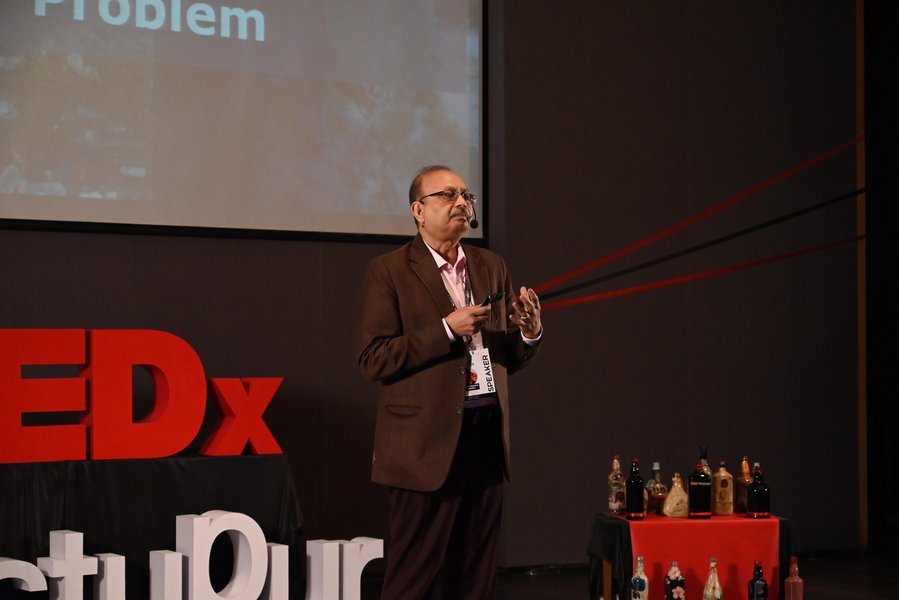
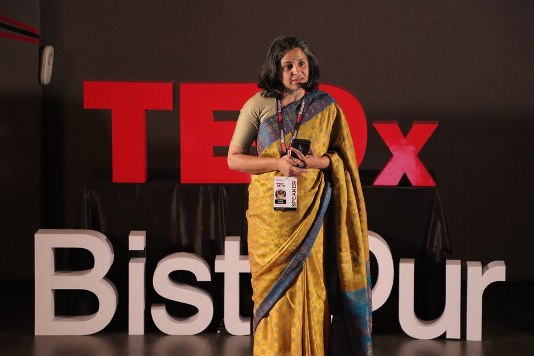
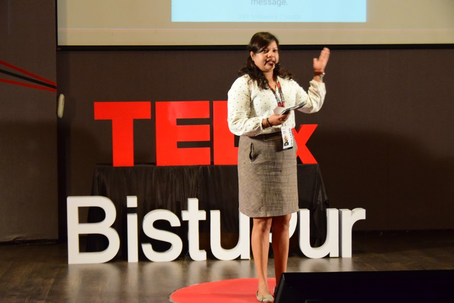
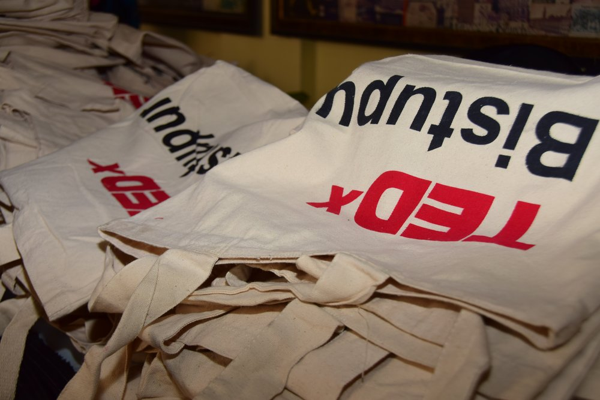
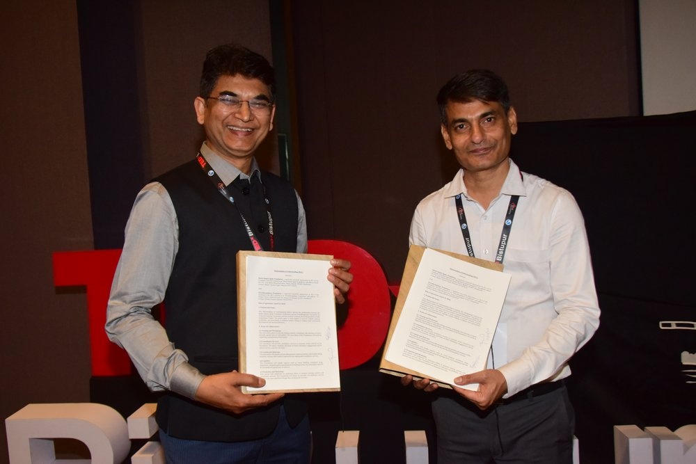
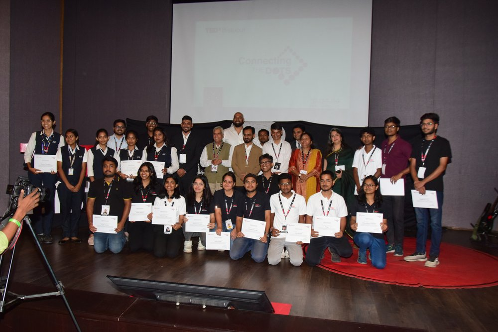
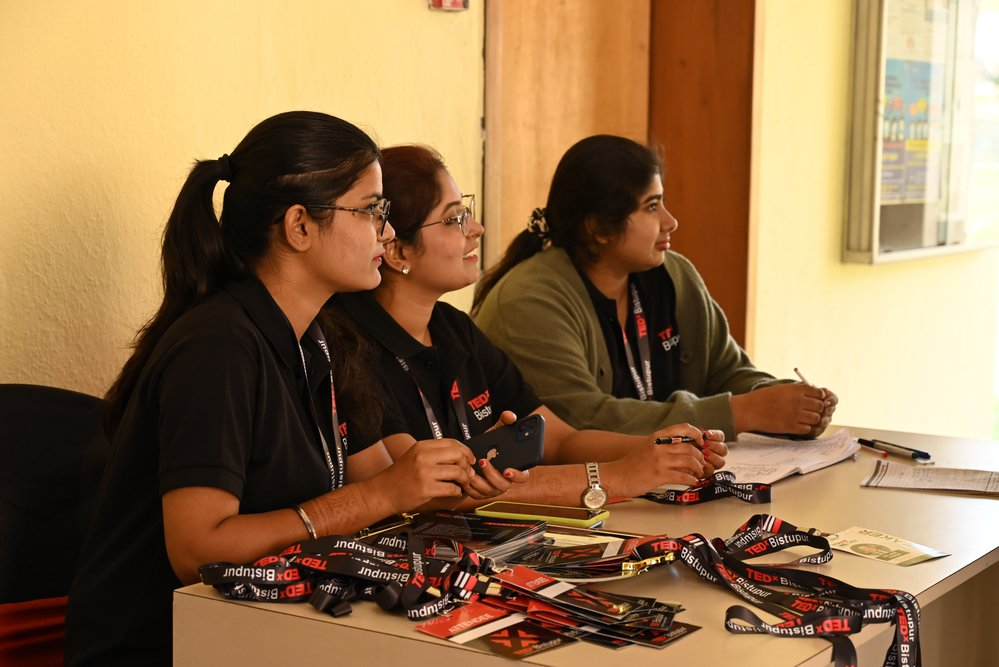

Rajiv Ranjan Mishra
Former Director General, NMCG
“Transforming river ecosystems through community stewardship and grassroots policy.”
Pioneering leaders, environmental architects, and changemakers who graced the TEDxBistupur stage under the patronage of SwachhataPukare Foundation.

Former Director General, NMCG
“Transforming river ecosystems through community stewardship and grassroots policy.”

Social Reformer & Community Catalyst
“Building resilient livelihood bridges for rural artisans and women changemakers.”

Creative Strategist & Youth Advocate
“Unleashing the creative power of next-generation innovators in regional hubs.”



